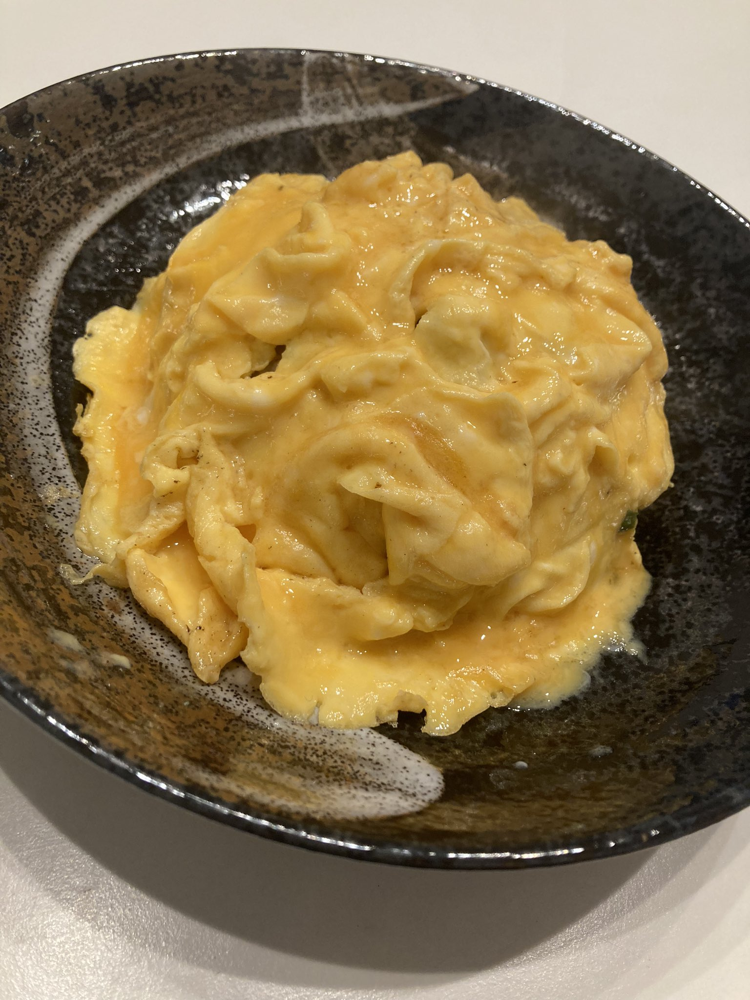
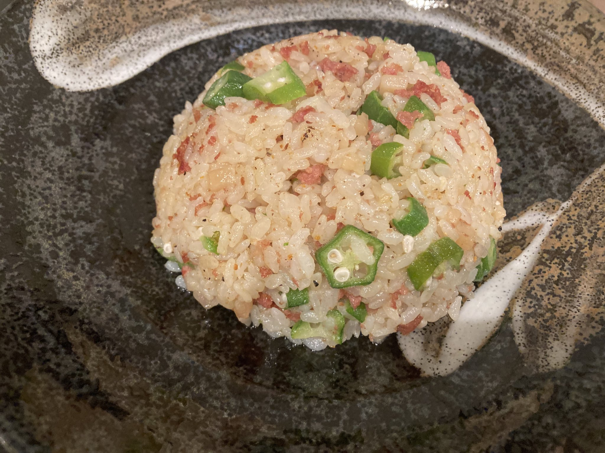

2026.04.13
桜、散ってしまった
今年は桜の見頃があっという間でした。シフトの帰り道に少しだけ見られたのでよかったかな。
休みの日は家でごはんを作ってた。

半熟ふわふわを目指してる。今日は割とうまくできた

オクラとベーコンのチャーハン。地味だけどこういうのが一番好き
毎年この季節になると、去年と何が変わったかなって考えてしまいます。仕事は楽しいし、ここにいる人たちも好き。ただ、人がいなくなることには、まだ慣れない気がする。